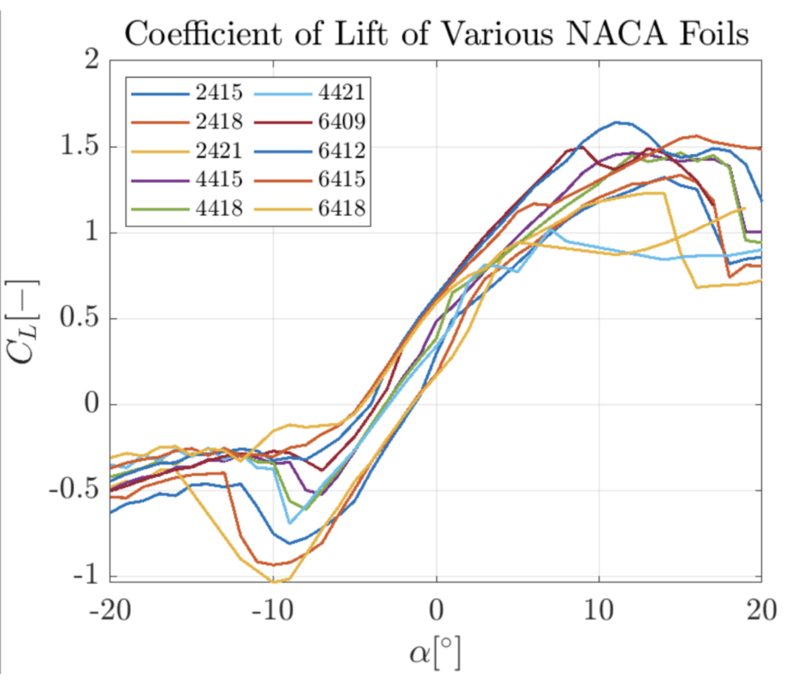
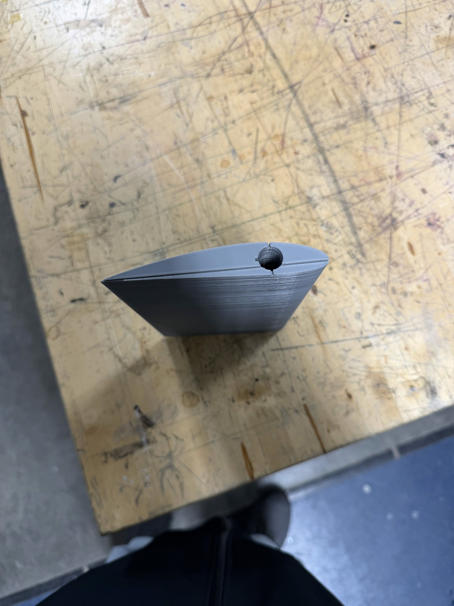
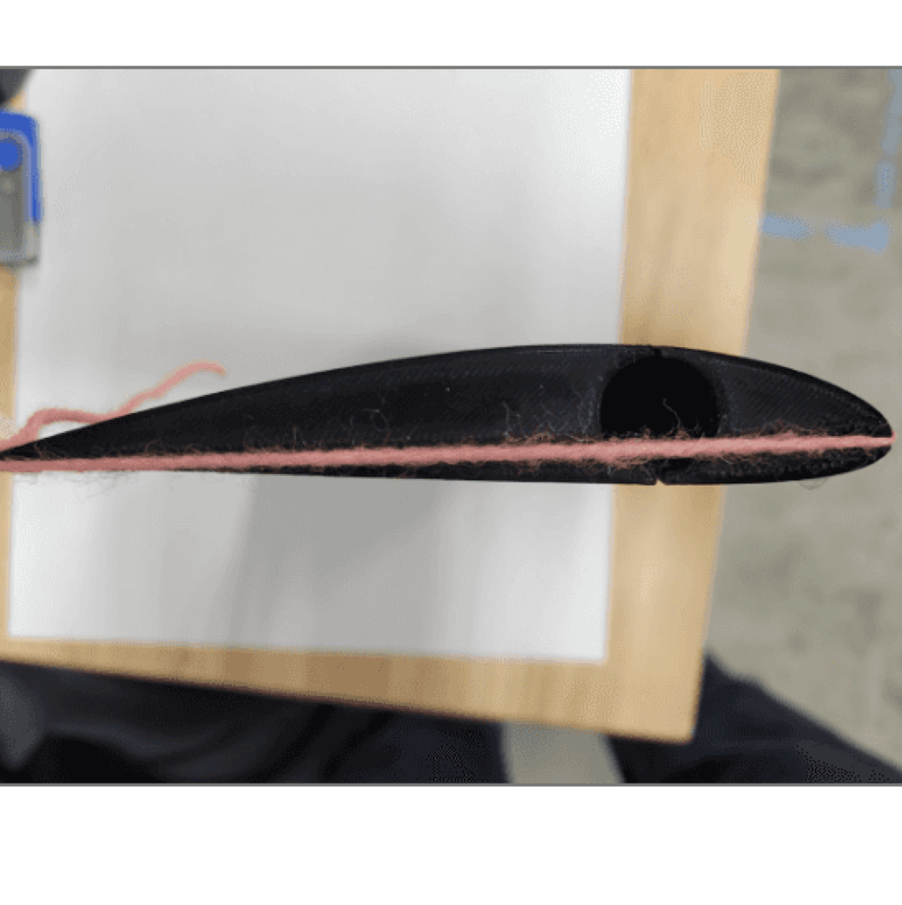

Air Foil Design
Worked in a group of 4 to optimize an airfoil for the highest coefficient of lift at stall.

Objective
The goal of this project was to evaluate how airfoil geometry influences aerodynamic performance and to design an improved hydrofoil configuration. We compared experimental wind tunnel data with computational simulations to better understand lift generation, drag forces, and stall behavior.
Approach
The project combined experimental testing and computational analysis. Wind tunnel experiments measured lift and drag forces across different angles of attack. XFLR5 was used to simulate airfoil performance and generate lift and drag curves for multiple NACA airfoil designs. MATLAB was used to process experimental data and generate performance plots such as lift vs. angle of attack and drag polars. MFC simulations visualized in VisIt were used to examine pressure coefficient distributions and vorticity fields to better understand flow separation and wake behavior.

Key Findings
The analysis revealed several important aerodynamic trends. Increasing camber improves lift generation, and a rounded leading edge delays stall by reducing early flow separation. Finite wing effects, such as wingtip vortices, reduced lift compared to 2D simulation predictions. We also observed that simulation tools tended to overestimate lift and underestimate drag compared to experimental results.
Design Outcome
Based on the analysis, the team proposed transitioning from the original airfoil design to a NACA 63A-010 hydrofoil, which reduces thickness and produces a flatter pressure distribution. This design helps lower drag and improve overall efficiency.

